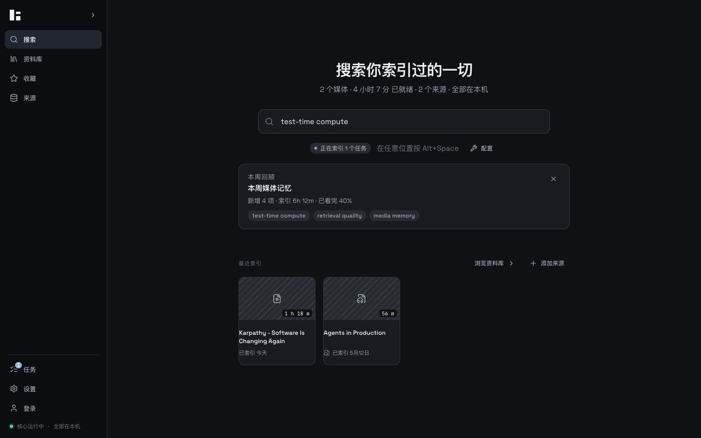
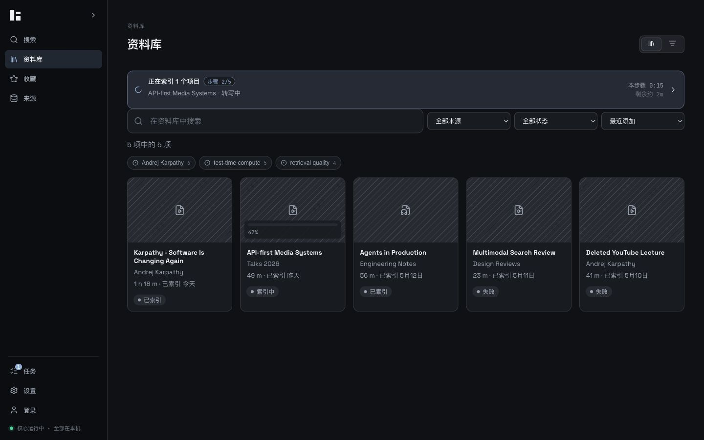
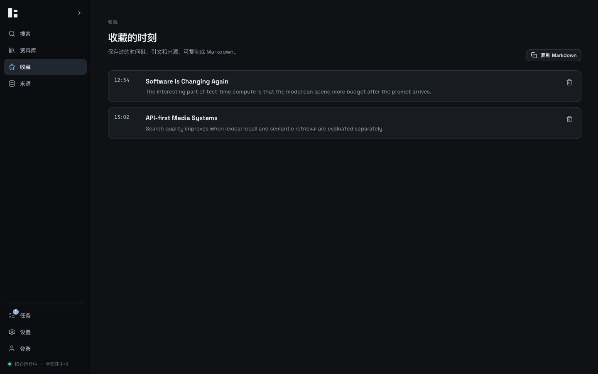
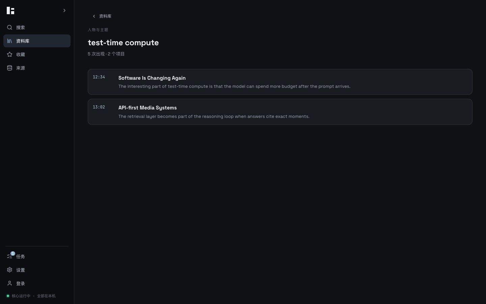
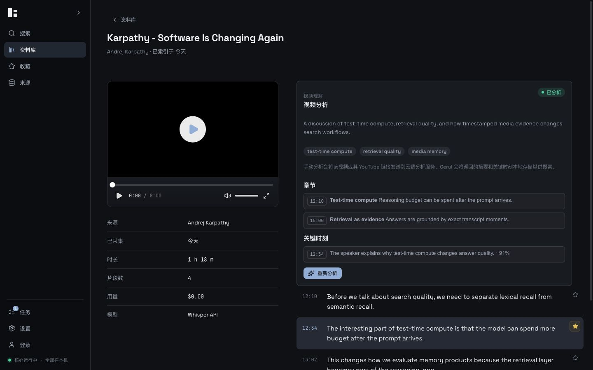
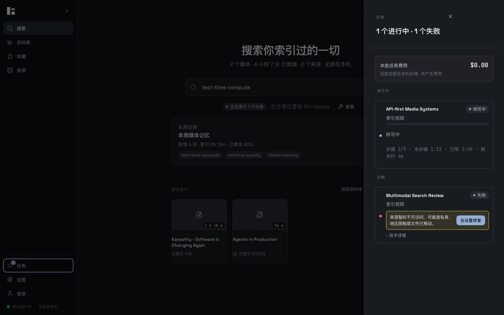
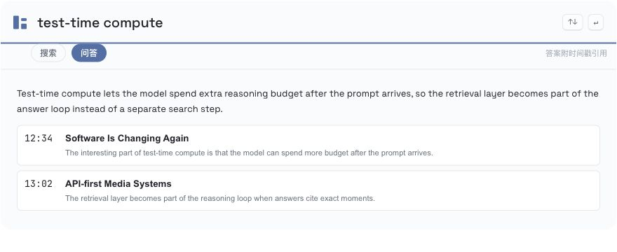
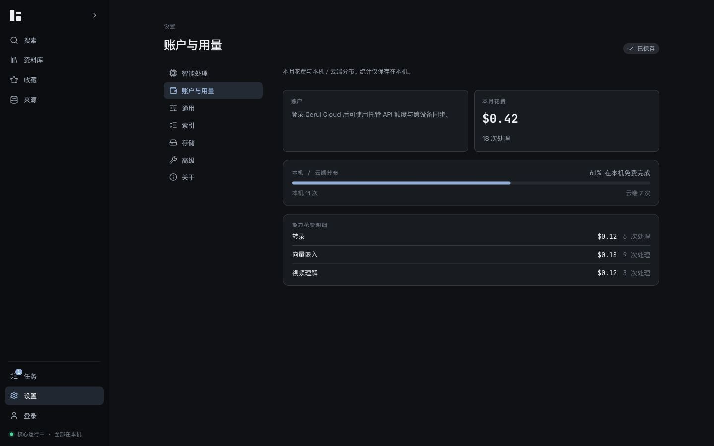
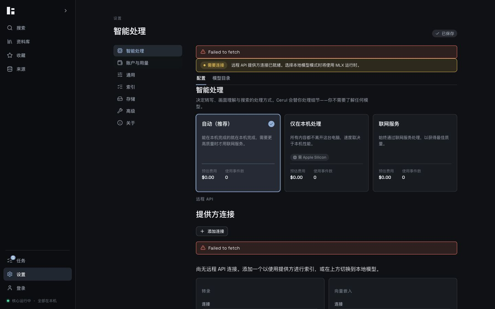

Cerul Redesign Codex 验收报告
基于 Claude 最新聊天记录、Claude Design 原型和上一份实施报告继续补完。除外部 accounts.cerul.ai OAuth 握手外，cerul-app 本仓库内可落地的后端和前端闭环已全部实现并通过本地构建与截图验收。
已补齐后端
/moments、/ask、/entities、/weekly-review、任务错误结构化、用量按能力拆分。
已补齐前端
收藏页、转录行星标、问答浮层、实体 chip 与详情页、本周回顾卡、任务修复入口、用量明细。
外部依赖
Google/GitHub OAuth 的桌面入口已接到 accounts.cerul.ai，完整握手需要云端 auth 服务实现回调端点。
Claude 缺口对照
| 原型项 | 本次处理 | 状态 |
|---|---|---|
| 任务面板 ③ | Rust API 对失败任务增加 error_info，前端显示人话错误和“去设置修复”深链。 | 完成 |
| P1 OAuth | Google/GitHub 按钮不再是“即将支持”，改为打开 /v1/auth/oauth/{provider}/start。云端 OAuth endpoint 不在本仓库。 | 桌面端完成，云端待接 |
| F1 Moments | 新增 sqlite moments 表、CRUD API、收藏 rail、收藏列表、转录行星标、Markdown 导出。 | 完成 |
| F2 Ask/RAG | 新增 POST /ask，复用本地检索结果生成带时间戳引用的确定性答案；Overlay 增加搜索/问答 tab。 | 完成 |
| F4 人物/主题 | 新增 /entities 和 /entities/:id，从理解结果与 transcript fallback 聚合实体；资料库显示 chip，详情页列出出现时刻。 | 完成 |
| F5 用量明细 | Usage Summary 加 by_capability 展示，设置页显示转录、向量嵌入、视频理解等成本分项。 | 完成 |
| F6 每周回顾 | 新增 /weekly-review 聚合最近 7 天索引数量、时长、观看比例和高频主题；主页显示可关闭回顾卡。 | 完成 |
原型 HTML 的 file:// 截图被 Codex Browser URL 安全策略拦截，且策略明确禁止通过间接浏览器方式绕过。因此本报告用原型源文件文字对照和实现截图验收，不附原型截图。
实现截图









后端改动
crates/cerul-storage/migrations/V0010__moments.sql：新增本地收藏表。crates/cerul-api/src/lib.rs：新增 moments CRUD、Ask、entities、weekly review、结构化 job error，并更新 API paths。- Ask 当前为本地确定性 RAG 汇总：先检索，再把引用片段组织成 answer；不会引入新的云端模型依赖。
前端改动
apps/desktop/src/App.tsx：新增 Moments、Entity Detail、Weekly Review、Usage breakdown、Item Detail 收藏动作和 fixture 验收数据。apps/desktop/src/OverlayApp.tsx：新增 Search/Ask tab，Ask 展示 answer + timestamp citations。apps/desktop/src/components/account-sidebar.tsx与lib/cloud/client.ts：OAuth 按钮连接 cloud start URL。apps/desktop/src/dialogs/jobs-sheet.tsx：失败任务显示结构化错误与设置修复入口。apps/desktop/src/styles/extensions.css与 i18n：补齐新界面样式和中英文文案。
验证命令
| 命令 | 结果 |
|---|---|
cargo check -p cerul-api | 通过 |
pnpm --filter @cerul/desktop typecheck | 通过 |
pnpm --filter @cerul/desktop build | 通过 |
pnpm --dir apps/desktop exec vite --host 127.0.0.1 --port 1421 | 已运行并完成截图验收 |